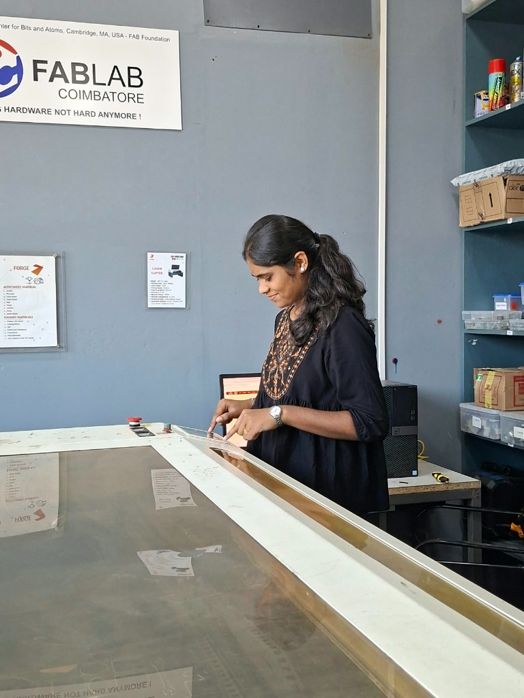
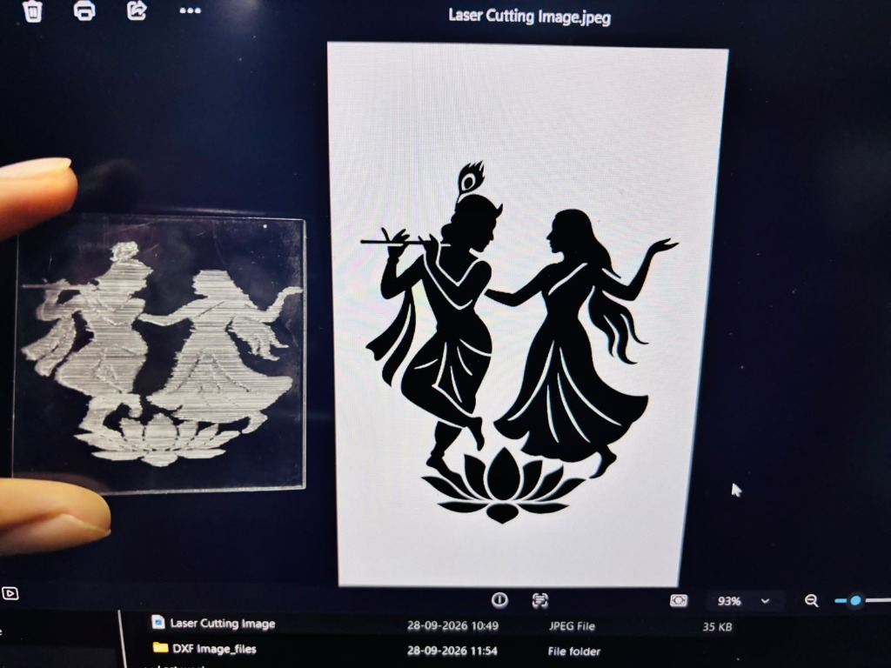
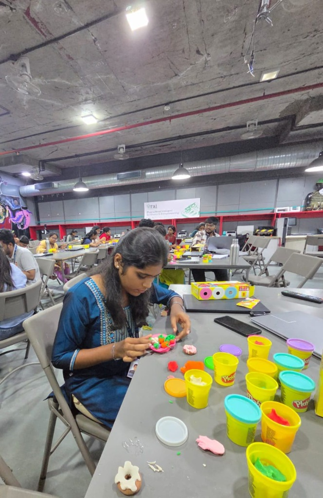
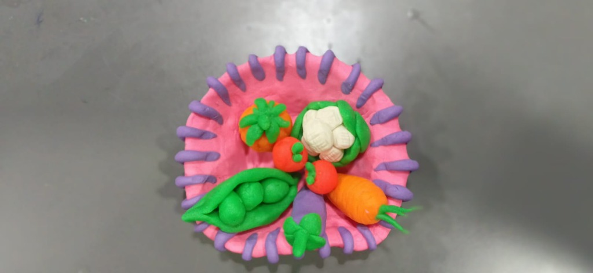

Week 06 – Digital Fabrication
Laser Cutting, Clay Modelling and 3D Printing
This week focused on hands-on digital fabrication and physical prototyping. I explored the process of preparing digital designs for fabrication, creating a physical model using clay, and producing a 3D printed object. These activities helped me understand how a digital concept can be transformed into a physical prototype.
Laser Cutting Using RDWorks V8
RDWorks V8 was used to prepare the design for the laser cutting process. The design was prepared digitally, checked for dimensions and positioning, and then prepared for fabrication using the laser cutting workflow.
Step 01 – Design Preparation
The design was first prepared digitally before moving to the laser fabrication stage. Vector contours and raster artwork were verified for scale, closed geometry, and layer separation.
Step 02 – Working with RDWorks V8
The design was opened and prepared in RDWorks V8 before sending it for laser cutting. Layer assignments, cutting speeds, and laser power parameters were configured according to the material requirements.
Step 03 – Design Setup
The preparation of the design included checking its dimensions, position within the coordinate workspace, focal height calibration, and confirming all cutting and engraving parameters.
Step 04 – Laser Cutting Process
The prepared design was sent to the laser cutting machine and the fabrication process was carried out at FabLab Coimbatore under proper ventilation and monitoring.

"Laser cutting process in progress."
FabLab Coimbatore • FORGE Laser Cutter Setup
Step 05 – Final Laser-Cut Output
The completed acrylic workpiece was removed from the machine bed and inspected. The laser engraving precisely captured the fine silhouettes, flute details, and ornamental curves of the digital design.

"Final output obtained after the laser cutting process."
Initial digital design on screen alongside the laser-engraved acrylic piece
Clay Modelling
Clay modelling was carried out as a hands-on modelling activity to understand how an idea can be developed into a physical form. The model was gradually shaped, refined and detailed using clay.
Step 01 – Preparing the Clay
Selected colored clay stock and prepared the workspace by conditioning and kneading the clay to achieve consistent plasticity and smooth workability.
Step 02 – Creating the Initial Form
Formed the basic foundational structure of the basket bowl, setting up the volumetric mass and establishing the primary scale proportions.
Step 03 – Developing the Model
The shape was gradually developed through hands-on modelling, refining curves, side contours, wall thickness, and proportioning individual components.

"Developing the shape through hands-on modelling in the lab."
Step 04 – Detailing and Refinement
The model was refined and required details were added, including miniature peas inside an open pod, ribbed carrots, tomato calyx details, and textured cauliflower florets.
Step 05 – Final Clay Model
The completed clay model after shaping and refinement demonstrates clean multi-colored assembly, balanced geometry, and tactile form development.

"Completed clay model after shaping and refinement."
3D Printing
The 3D printing activity involved preparing a digital model and converting it into a physical object using a 3D printer. The workflow included preparing the model, preparing it for printing, setting up the printer and observing the printing process.
Step 01 – 3D Model Preparation
The digital 3D model was designed in CAD software with watertight (manifold) geometry, appropriate wall thicknesses, and structural stability suitable for additive fabrication.
Step 02 – Print Preparation
Imported the 3D model into the slicing software to check dimensions, orient the geometry on the virtual build platform, evaluate support structures, and generate the sliced toolpath instructions.
Step 03 – 3D Printer Setup
Configured the 3D printer hardware by verifying bed leveling calibration, preheating the extrusion nozzle and heated bed, and feeding the printing material.
Step 04 – Printing Process
Initiated the print sequence and monitored the layer-by-layer deposition pass, ensuring consistent material extrusion, no warping, and solid first-layer adhesion.
Step 05 – Final 3D Printed Model
Allowed the build platform to cool to ambient temperature, safely detached the completed physical part, removed support structures, and inspected dimensional accuracy and surface fidelity.
What I Learned
This week's activities gave me practical exposure to digital fabrication and physical prototyping. I learned how a digital design can be prepared for laser cutting, how physical forms can be developed through clay modelling, and how a digital model can be converted into a physical object through 3D printing. The activities also helped me understand the importance of accurate design preparation, dimensions and hands-on fabrication.
Final Outcome
Week 06 provided hands-on experience in digital fabrication and physical prototyping. The activities connected digital design with real-world fabrication through laser cutting, clay modelling and 3D printing.
Final laser-engraved acrylic piece side-by-side with the digital vector design.
Completed detailed clay vegetable basket model with peas in pod, carrot, tomatoes, and cauliflower.